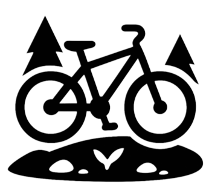

Philippines
Local peaks, cool air, and familiar mountain trails. Home.


Welcome to Climbros
The peak isn't just a destination, it is a higher version of one's self.


Local peaks, cool air, and familiar mountain trails. Home.

Bright skies, clean lines, and summit views worth the climb. Fresh start.

Open landscapes and quieter paths with a softer mood. Foreign weight.
Get to know the story behind Climbros Baguio and explore the places, memories, and mountain moments that shaped it.
Go to Climbros Journey